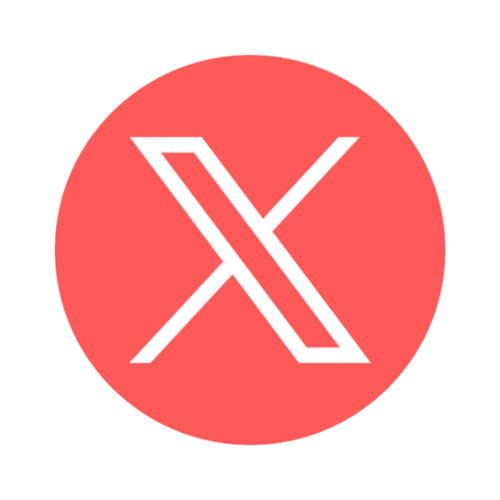

JOSH DERENCE PINEDA, BORN ON NOVEMBER 4, 2003, IN MANILA, IS A COMPUTER ENGINEERING STUDENT PASSIONATE ABOUT MAKING A DIFFERENCE IN THE INDUSTRY. HIS CURIOSITY LED HIM FROM FIXING COMPUTERS TO PURSUING A DREAM OF IMPACTING THE TECHNOLOGICAL WORLD. WHILE HE STRIVES TO IMPROVE CONTINUOUSLY, JOSH KNOWS THAT TO BE AMONG THE BEST, HE MUST WORK HARD TO REACH THAT GOAL.
